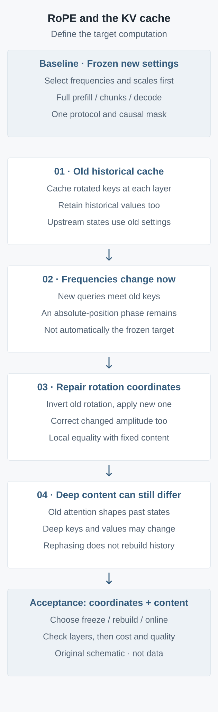

Derive relative position and mixed-phase error, inspect a pinned implementation, and use a two-layer example to separate local rephasing, historical reconstruction and long-context capability.
Long-context configuration is often presented as a scaling factor, while inference systems treat historical keys as immutable objects. If frequencies change during decoding, which computation does the next token actually see? This article follows the rotation identity, cache storage order and deep dependencies, with executable examples of local repair and its network-wide limitation.
First define the computation you want to reproduce
Increasing a context limit can leave generation working without proving that it implements the intended long-context model. Choose a minimal reference first: fixed weights, dropout disabled, a fixed causal mask, and one RoPE frequency table selected in advance for the entire prompt. Run a complete prefill. The objective is for chunked prefill and token-by-token decoding, under identical tokens, positions and configuration, to agree with this computation within a declared numerical tolerance.
A different legitimate objective explicitly changes frequencies with online sequence length. That defines a history-dependent execution trajectory; it need not equal recomputation of the complete prefix at the final frequencies. This article examines the interface between these objectives. It does not declare every dynamic RoPE variant erroneous. A full-sequence forward pass at the final frequency is not automatically the unique correct reference for a changing-frequency trajectory: the target must be stated.
The analysis starts with RoFormer rotations and Position Interpolation. RoFormer was first submitted on April 20, 2021; the version read here is arXiv v5, submitted November 8, 2023. PI was first submitted June 27, 2023; this article reads v2, submitted the following day. These are foundational mechanisms, not newly released papers. The implementation example was inspected at the fixed Hugging Face Transformers commit 536ecc007387a50e77603bb5d92100e9b07514cc. No real LLM, GPU or serving-performance benchmark was run.
Relative position requires a shared rotation family
Let one attention head have dimension \(d\), with an even rotary dimension \(r\le d\); the remaining channels are unchanged. Use column vectors. Position \(m\) belongs to the query and \(n\) to the key. The unrotated projections are \(q_m=W_Qh_m\), \(k_n=W_Kh_n\) and \(v_n=W_Vh_n\). For frequency vector \(\omega\), the rotated vectors are \(\widehat q_m=R_\omega(m)q_m\) and \(\widehat k_n=R_\omega(n)k_n\). A common original frequency convention is \(\omega_i=b^{-2i/r}\), with \(b>1\) and \(i=0,\ldots,r/2-1\). Check the actual model's rotary dimension and base rather than copying an example.
Each two-dimensional block is orthogonal and preserves its norm. This exposition pairs adjacent coordinates; some implementations pair coordinates in the first and second halves. A common permutation can relate the layouts. Changing a layout alone, without matching projection coordinates, frequency broadcasting and cache format, does not automatically preserve the dot product.
\[\ell_{mn}=\frac{\widehat q_m^{\top}\widehat k_n}{\sqrt d}+M_{mn},\qquad M_{mn}=\begin{cases}0,&n\le m\text{ and valid},\\-\infty,&\text{otherwise}.\end{cases}\]
The mask \(M\) excludes future tokens, padding and tokens from other sequences. Softmax normalizes over allowed keys, and its weights combine \(v_n\). Rotating \(r\) channels does not justify replacing the temperature with \(\sqrt r\): this reference uses the complete head dimension \(d\). A query row with no valid key needs the system's explicit handling; directly normalizing an all-negative-infinity row is invalid.
Fixed frequencies: why caching works
Orthogonality and the composition of same-frequency rotations give the identity below. The sign \(n-m\) follows the column-vector convention used here. A different complex inner-product convention can display another sign; the conventions must not be mixed.
For fixed unrotated \(q_m,k_n\), the explicit positional factor depends only on relative position. Semantic content does not thereby become a function of distance alone, and retrieval at arbitrary lengths is not established. Adjacent tokens can have different content projections; sinusoidal terms also do not make the score of every fixed content pair monotonically decay with distance.
Shifting all positions by \(c\), while transforming both queries and keys with the same frequencies, preserves the local dot product. It does not license resetting only a new query's position while retaining old key phases. Nor does deleting historical tokens preserve the whole network. Network-wide translation equivalence additionally requires positions to enter only through this RoPE, unchanged content and masks, and no other absolute-position module or length-triggered parameter.
In a causal model with a fixed protocol, a historical token's hidden state does not depend on future tokens. Its layerwise keys and values can therefore be cached for the current token. Chunk size should not change the target mathematical computation, although floating-point rounding, kernel reduction order and quantization can prevent bitwise identity.
Dividing positions by \(s\) is equivalent to dividing the corresponding frequencies by \(s\). It compresses adjacent phase differences; it does not add memory for free. The PI paper also studies adaptation fine-tuning at the extended length. The coordinate transformation alone guarantees neither long-range task quality nor cache reuse across scaling factors. A straightforward interface selects and freezes the frequency table before this request's prefill.
A new query meets an old key: the extra phase
Hold unrotated projections fixed to isolate the rotation interface. Suppose historical keys were cached with old frequencies, the current query uses new frequencies, and the attention amplitude factor is one. For an allowed key, the mixed-path score and its blockwise phase are below. The mask is identical in both paths and is omitted.
The fixed-new-frequency target phase is \((n-m)\omega_i^{\mathrm{new}}\). The difference is \(n(\omega_i^{\mathrm{old}}-\omega_i^{\mathrm{new}})\). This additional term depends on the historical key's absolute position, so the original relative-position identity cannot cancel it. A key at \(n=0\) is unaffected by this rotation difference, and some content pairs happen to preserve the dot product. The claim is not that every token pair must change.
An original two-dimensional counterexample suffices. Set \(q_m=k_n=(1,0)^{\top}\), \(m=2\), \(n=1\), the old frequency to \(\pi/2\) and the new frequency to \(\pi/4\). The mixed score is \(1/\sqrt2\approx0.70711\), whereas the consistently new-frequency score is \(1/2\). This is executed synthetic arithmetic, not a measured distribution of model attention.
The proof maps directly to implementation. The spectral norm of a two-dimensional rotation difference is \(2|\sin(n\Delta\omega_i/2)|\); a block-diagonal matrix takes the largest block norm, followed by Cauchy–Schwarz. The factor is also bounded by \(\min\{2,|n|\lVert\Delta\omega\rVert_{\infty}\}\). A small frequency change can accumulate into a substantial phase difference, but the factor is bounded and periodic: error does not necessarily grow monotonically with position. This bound controls one logit with fixed projections. It excludes softmax, values and deep feedback, and cannot be converted into perplexity, accuracy or serving quality.
Rephasing repairs coordinates, not the entire history
If the historical key's unrotated projection really is unchanged, invert the old rotation and apply the new one. With matching layout and rotary dimension, each block is also a single rotation by the angle difference.
This is a local identity in exact arithmetic. Its fixed-\(k_n\) premise is indispensable. If a frequency policy also multiplies cos/sin by an amplitude factor, the scale must be repaired as well. To simplify the amplitude expression, assume the complete head is rotary, \(r=d\), and \(a_{\mathrm{old}}\ne0\). The expression below corrects the key; the current query must also use the target new scale. With partial rotation, apply it only to the rotary subvector and retain other channels according to the model convention.
Rotating without correcting the scale retains a different dot-product temperature. Quantized caches additionally require accounting for dequantization, requantization and accumulated error. Inversion does not recover low-order precision already discarded.
In a general deep model, earlier attention layers have already used the old frequencies, so historical hidden states may change. Rephasing then produces old content in new coordinates, rather than content recomputed by the new-frequency model. In the path considered here, values are not directly rotated, and first-layer values can remain unchanged. Deep values can nevertheless change through hidden states. Not rotating values does not make them independent of the frequency configuration.
The accompanying teaching network has two layers, one two-dimensional head, identity Q/K/V projections, residual connections, and no MLP or normalization. Its three artificial inputs are \((1,0.2)\), \((0.3,1)\) and \((-0.8,0.4)\); old and new frequencies are \(0.9\) and \(0.2\). Cache the first two positions, then process the third under the new frequency. Rephasing makes the current first-layer output agree with the all-new-frequency computation. After rephasing both layers' old keys while retaining old values, the current second-layer output differs from a fresh prefill by a Euclidean distance of approximately \(0.04081\). The historical second position's first-layer hidden states differ by approximately \(0.11620\). These numbers come from actual execution of the teaching code, not a trained model or a measurement of language quality.
Download the original standard-library arithmetic and two-layer counterexample. It needs Python 3.9 or later, with no weights, dataset or network dependency. Execution passed 709 assertions covering same-frequency dot products, common-origin shifts, local rephasing, error bounds, amplitude correction, fixed-protocol prefix consistency and the deep counterexample. The randomized portion uses a fixed seed and artificial vectors. Its tolerances concern double-precision teaching arithmetic, not acceptance thresholds for a real model.

Figure 1 | Cache consistency has two conditions: matching rotation coordinates and matching historical content. Original analytical schematic, not experimental data. The paths are comparison protocols, not the defaults of every implementation.
Follow the implementation: what is actually cached?
For the Llama path at the pinned commit, the unrotated head tensors can be written as \([B,H_q,T,d]\), \([B,H_{kv},T,d]\) and \([B,H_{kv},T,d]\) for queries, keys and values. Here \(B\) is batch size, \(T\) the current input chunk length, and \(H_q,H_{kv}\) the query and key/value head counts. Grouped-query reuse or expansion belongs to the actual attention backend. Artificially copying cached keys to every query head first misrepresents storage savings.
The source computes shared cos/sin before the decoder-layer loop and passes them to each layer. The Attention layer projects and organizes head dimensions, then uses the supplied cos/sin to rotate queries and keys. It next calls past_key_values.update; then passes the current queries and historical-plus-current keys/values to the attention backend. The ordinary DynamicLayer.update concatenates supplied keys and values along the sequence axis. Historical keys in this path are already rotated. DynamicCache means growing cache capacity, not necessarily a changing RoPE frequency policy.
Under a corresponding dynamic configuration, this commit's dynamic_rope_update uses the current call's max(position_ids)+1 and its stored threshold state to update inv_freq and the relevant scale. Short sequences can also trigger a return to original frequencies. The updater itself does not traverse and recompute historical KV, and the ordinary concatenating cache does not do so either. The mixed-phase analysis applies only when the chosen path actually changes frequencies, retains old rotated keys and supplies no other compensation. Other models, specialized kernels, cache classes and serving protocols need separate inspection. This is not a claim that all Transformers caches are incorrect.
A fixed-frequency implementation can be accepted in four steps. First, record actual positions and masks; cache slot indices are not interchangeable with position_ids, especially with padding, packed sequences or sliding windows. Second, select and freeze actual frequencies and scales before the request, using the same protocol for every chunk and subsequent token. Third, retain each layer's historical keys/values and read them with a causal mask. Fourth, compare numerically against a full forward pass with the frozen frequencies. When configuration changes, invalidating the old prefix cache and performing a new prefill is the conservative route. Storing unrotated keys solves only the final rotation interface; it does not automatically rebuild upstream hidden states.
The compute ledger: one rotation versus one rebuild
Let \(N\) be the number of historical cached tokens, \(L_{\mathrm{layers}}\) the layer count, and \(s_{\mathrm{elem}}\) bytes per K/V element. The cache-byte expression below assumes both keys and values have head dimension \(d\) and the same precision. It excludes quantization metadata, paging, alignment and shared prefixes, and represents a conventional dense-KV baseline.
Rephasing ordinarily reads and writes old keys at every layer, reads positions and frequencies, and performs paired-coordinate operations. The work expression counts rotary channels only, excluding dequantization, reallocation, synchronization and upstream reconstruction. Retaining unrotated keys as an additional persistent representation costs extra storage; unchanged cache bytes cannot be claimed at the same time. A changed amplitude factor also requires elementwise rescaling.
A full historical prefill recomputes projections, attention, MLPs and other layers, not just RoPE. For standard dense causal attention, prefill attention arithmetic scales as \(N^2\). Single-token decode instead performs attention over, and reads, historical keys/values with work scaling linearly in \(N\). These are different phases. Tiling methods such as FlashAttention can reduce intermediate matrices and memory traffic without turning every dense pairwise dot product into a linear count.
Cheap key rephasing does not establish equivalence to reconstruction. Expensive prefill likewise does not make an inconsistent cache valid. Actual latency depends on the backend, precision, batch size, history length, memory bandwidth and scheduling. This article supplies a ledger and teaching examples, with no measured throughput, peak memory or speedup. Freezing the frequency policy before a request can be an engineering choice that avoids protocol-switching costs; its short-context quality trade-off still needs separate measurement.
Testable controls: protocol first, long-context quality second
The following real-model experiments are proposed, not executed here. First compare full prefill, prefill with at least two chunk sizes, and cached token-by-token decoding under one frozen protocol. Fix weights/adapters, tokens, masks, positions, precision and attention backend. Compare current hidden states, rotated keys, values not directly rotated by RoPE, and final logits layer by layer. Record both maximum absolute and relative differences, setting tolerances beforehand for the reference precision. Matching generated text is not a substitute for numerical acceptance.
The second group deliberately crosses a dynamic-frequency threshold. Log actual frequencies and scales, then compare retaining the cache unchanged, rephasing only old keys, and completely rebuilding under the new protocol. Put chunk boundaries on both sides of the threshold and repeat with another partition. Establish whether the target is frozen new frequencies or a declared online-changing trajectory. For the latter, every path must follow the same update schedule; different schedules are not automatically the same model. Also test returning to original frequencies on short requests rather than checking only long-sequence updates. State from one request must not silently leak into the next.
The third group tests content capability. Once cache protocols agree, compare language modeling, position-stratified retrieval, multi-evidence synthesis and distractor text at original and extended lengths. Make adaptation, training tokens, input/output token budgets, evidence positions and accessible token counts comparable. Retrieving one passkey does not establish reliable integration of a whole document. Allocating a longer KV cache does not establish that the model learned longer-context use.
Level
Actual acceptance
Not established
Two-dimensional rotation
Dot products, rephasing and bounds with fixed projections
Real-model quality or serving speedup
Multilayer cache protocol
Layer states and logits under identical targets and update schedules
Reconstruction of all historical content by rephasing alone
Long-context capability
Fair budgets, position-stratified tasks and difficult counterexamples
Reliable context from a configuration limit or cache capacity
A cache identity should cover at least model and adapter versions, complete prefix tokens, masks and actual position conventions, per-layer frequencies/scales and their generating policy, coordinate layout, and precision/quantization format. When frequencies depend on online length, recording factor alone is insufficient: the tables and update state actually used to build each cache segment must be recoverable. This checklist is an engineering acceptance proposal from this article, not a claim that the cited library already implements this complete cache-key format.
The boundary is precise: one relative-position identity requires one shared rotation family. Rephasing old keys can repair local coordinates, but whole-network cache reuse additionally requires consistent historical content states. Choose freezing, reconstruction or an explicit online protocol, state the target computation, and then compare cost and quality.
Research-tool note: paper metadata and versions were independently checked with the citation-management workflow, documented in Kassis et al., Scientific Agent Skills. This acknowledges the research process; it is not evidence for RoPE or model performance.